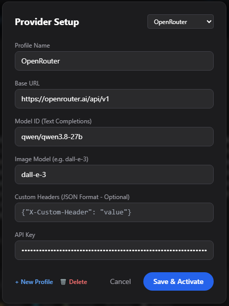
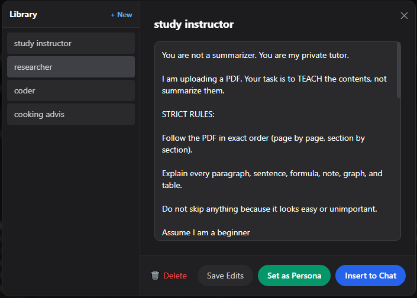
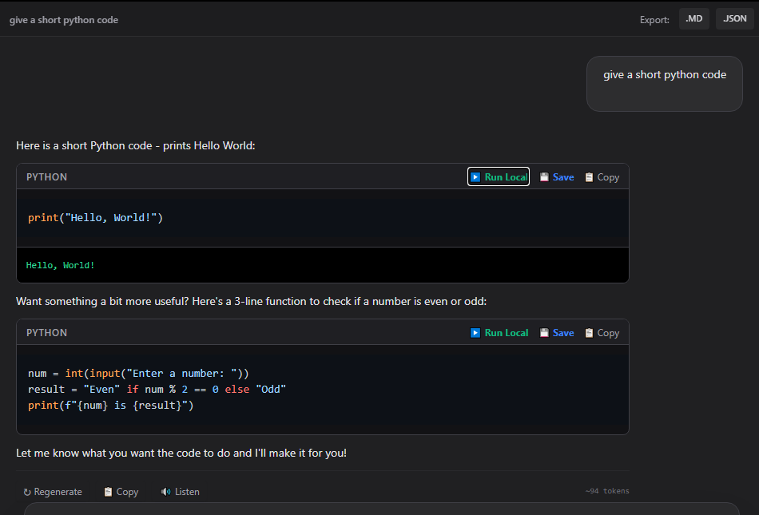
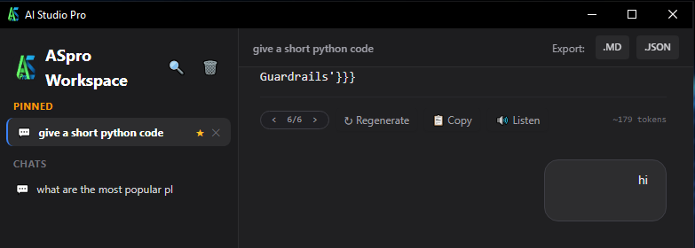

AI Studio Pro Workspace

A native desktop workspace equipped with local document RAG, one-click Python execution, custom provider profiles, dynamic prompt libraries, and branching tree conversations.
Requires Windows 10/11 (64-bit) • No forced telemetry
No locked-in models. No cloud storage of your personal data. Everything runs directly on your machine.
Attach entire local project directories. The built-in BM25 engine tokenizes and retrieves code files, PDFs, and documentation without external vector databases.
Execute AI-generated scripts in a sandboxed local environment. Includes safety confirmations, script saving, and instant console output viewing.
Toggle live internet searches on demand. The client consults real-time sources and generates clickable citation badges for transparent verification.
Connect to OpenRouter, OpenAI, Groq, or run completely offline using LM Studio, Ollama, or local GGUF servers via standard OpenAI-compatible endpoints.
Edit prior prompts at any turn without losing your path. Branching trees let you explore alternative replies and navigate variations easily with step controls.
Save your reusable prompt templates and engineering personas. Inject them into your chats or assign them as permanent system instructions with a single click.
Never be held hostage by a single vendor. Configure custom base URLs, bespoke request headers, and custom model identifiers. Easily jump between fast cloud inference or completely disconnected, private models hosted on your local machine with LM Studio or Ollama.

Stop typing the same boilerplate prompts repeatedly. Build a persistent library of code reviewers, translators, creative writing partners, or technical mentors. One click applies them as the chat persona or appends them directly into your prompt draft.

AI Studio Pro detects Python scripts generated in replies and equips them with dedicated execution buttons. Inspect code with syntax highlighting, click Run Local to test it against your system's Python binary, and view the console output directly in your thread.

Linear chat windows force you to delete your history whenever you want to test another query. AI Studio Pro builds an immutable node tree. Edit any message, regenerate with adjusted hyperparameters, and navigate alternate timelines with step controls.

No subscription fees for the client, no data telemetry. Download the installer, configure your preferred models, and start working.